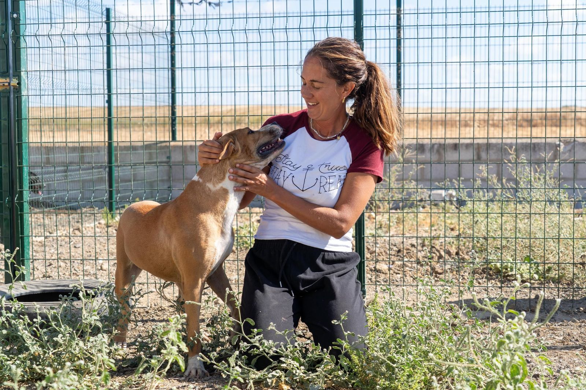
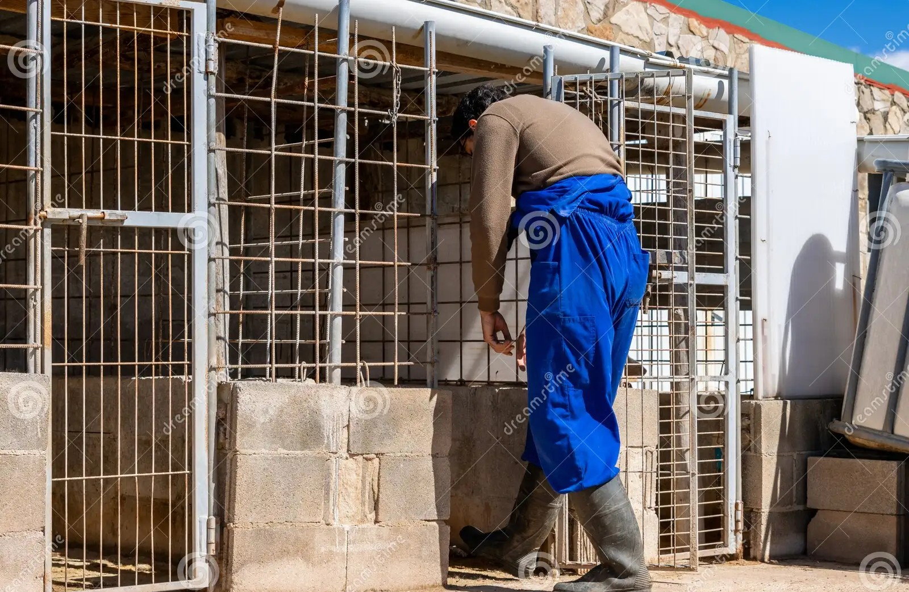
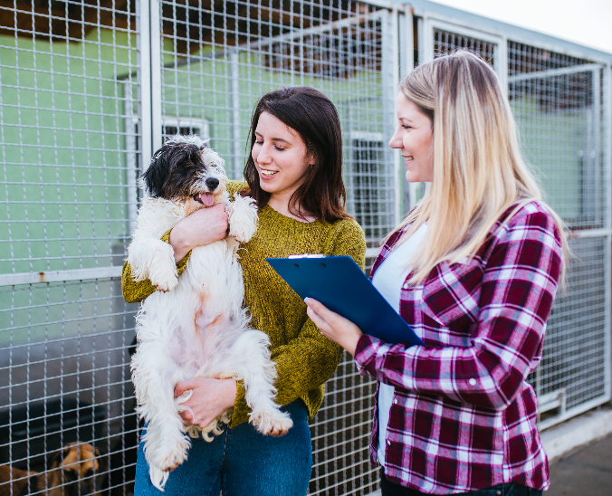
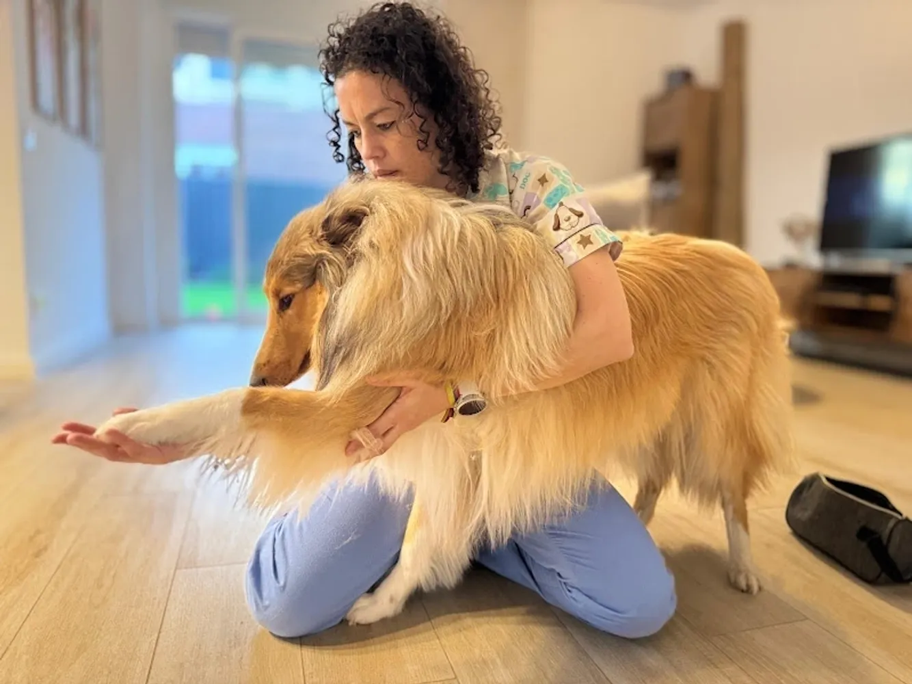

Esta es la Plantilla actual del refugio, con formación oficial en sus respectivas especialidades

Coordinadora general desde 2015
Lidera el quipo técnico y de voluntariado, y supervisa cada proceso de adopción del refugio

Veterinario
Desde 2018

Veterinaria
Desde 2020

Cuidador de instalaciones
Desde 2019

Responsable de adopciones
Desde 2019

Fisioterapeuta
Desde 2022
Todo el equipo cuenta con formación continua en binestar animal y primeros auxilios.